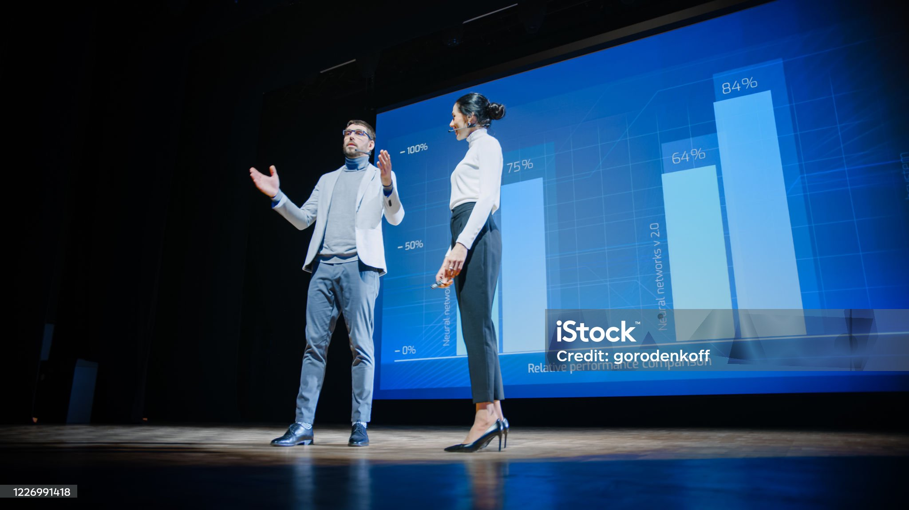

TechCon began its journey in 2010 as a grassroots meetup of software
engineers and tech hobbyists in San Francisco. What started as a
modest gathering of 50 attendees has since transformed into a global
platform attracting over 10,000 participants annually from 40+
countries. Over the years, TechCon has become synonymous with
cutting-edge innovation, bringing together developers, researchers,
startups, and enterprise leaders to exchange ideas, launch new
products, and build the future of technology. From the introduction of
AI breakthroughs in 2015 to discussions on ethical technology and
quantum computing in recent editions, TechCon has consistently set the
pace for what's next in tech.
Our Mission
At TechCon, we believe that technology should be inclusive, ethical,
and transformative. Our mission is to:
Educate: Provide accessible, high-quality content
and learning opportunities to professionals of all skill levels.
Inspire: Showcase pioneering work and stories that
drive creativity and innovation.
Connect: Build a diverse global community where
developers, founders, and tech enthusiasts can collaborate and share
ideas.
Empower: Equip individuals and organizations with
the tools and insights needed to solve real-world problems through
technology.

Through keynotes, workshops, exhibitions, and panel discussions,
TechCon fosters an environment that turns knowledge into action.
Past Speakers
Dr. Ada Ekwueme - (Chief Data Scientist at NeuroSynapse AI)
At TechCon 2022, Dr. Ekwueme delivered an inspiring keynote on the
future of neuro-symbolic AI and its application in healthcare
diagnostics. Her groundbreaking work in blending neuroscience with
machine learning has earned her global recognition.
Dr. Ada Ekwueme speaking at TechCon 2022 about AI in healthcare
Carlos Mendes - (Founder of DevPlanet and advocate for open source
in education)
A crowd favorite at TechCon 2021, Carlos spoke passionately about
democratizing access to developer education and how open-source
communities can uplift emerging markets.
Carlos Mendes during his talk on open source and education
Rina Zhao - (Quantum Computing Lead at Qubitix Labs)
Rina’s 2023 session, “Quantum Now”, broke down the real-world
applications of quantum computing for logistics and cybersecurity.
Her clarity and charisma made complex topics accessible to all
attendees.
Rina Zhao presenting a diagram on quantum computing